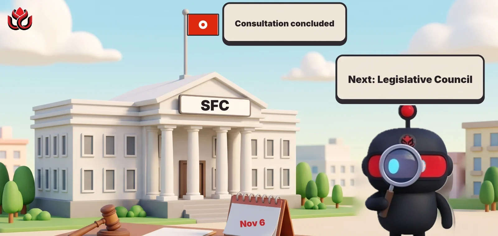

Hong Kong moves to ban "crypto exchange" in the names of unlicensed firms
The Securities and Futures Commission has concluded its consultation on misleading business names. Any firm calling itself a crypto exchange, virtual asset market or token trading platform would need SFC approval first, six months after the law passes.
Key points
- The SFC has concluded its consultation on restricting misleading names. Its FAQ on the conclusions was last updated November 6, 2026.
- Any title that combines a term like "crypto", "token" or "virtual asset" with one like "exchange", "market" or "trading platform" would need approval.
- The changes still need the Legislative Council, and would start six months after enactment, with no other transition period.
What happened
Hong Kong's securities regulator has finished a consultation on stopping unlicensed firms from using names that sound regulated. The SFC published an FAQ on the consultation conclusions, last updated November 6, 2026.
The plan was first floated on June 12, 2025, when the SFC proposed the change and took comments until August 11, 2025. It said then that it was concerned about firms "improperly adopting names that may give the public a false impression."
Which names are covered
The FAQ uses two lists. A name is restricted if it combines, or closely resembles, a word from Table A with a word from Table B.
- Table A (crypto terms): crypto, cryptoasset, cryptocurrency, crypto coin, digital asset, digital coin, digital currency, token, tokenized assets, virtual asset, virtual coin, virtual currency. Securities terms such as stock, futures and derivatives are covered too.
- Table B (venue terms): exchange, market, trading platform, trading center, trading company, trading house, clearing house, clearing platform and similar words.
The SFC's own examples include "crypto exchange" and "stock trading platform", and even "digital assets information exchange" as a name that closely resembles a restricted one. Chinese equivalents are listed as well.

Two laws, one application
Hong Kong's current rule, section 34 of the Securities and Futures Ordinance, covers only names tied to securities and futures, such as "stock exchange". Because most crypto is neither, the SFC will add a parallel rule to the Anti-Money Laundering and Counter-Terrorist Financing Ordinance, the law behind its licensing regime for virtual asset trading platforms. A name that touches both regimes needs approval under both, though firms can file one combined application.
When deciding a case, the SFC will look at the name, what the business actually does, whether it holds the license it would need and whether the name suggests SFC oversight.
When it starts
Not yet. The SFC and the Hong Kong government still have to finish drafting the amendments and send them to the Legislative Council. There will be no other transition period. Instead, the rules would start six months after the law is enacted, giving firms time to rename. The FAQ does not list penalties.
LC Insight analysis
This section is our reading of the facts above, not a statement of fact.
- We think the aim is simple, to make it obvious to a retail investor that a firm calling itself an exchange is licensed. The rule adds a check at the name level.
- Offshore apps that market to Hong Kong users under exchange-style names are the most likely to be affected, along with local over-the-counter shops and information sites.
- The six-month delay after enactment means the earliest practical impact is likely well into 2027, depending on the Legislative Council timetable.
What's next
- The draft bill and its date at the Legislative Council
- Whether penalties are set out in the bill
- Any SFC warnings to firms already using these names
Disclaimer. This article is based on public information and the sources listed below as of the update time shown. It is for information only and is not investment, legal or tax advice. Figures may change as companies and authorities publish new data.